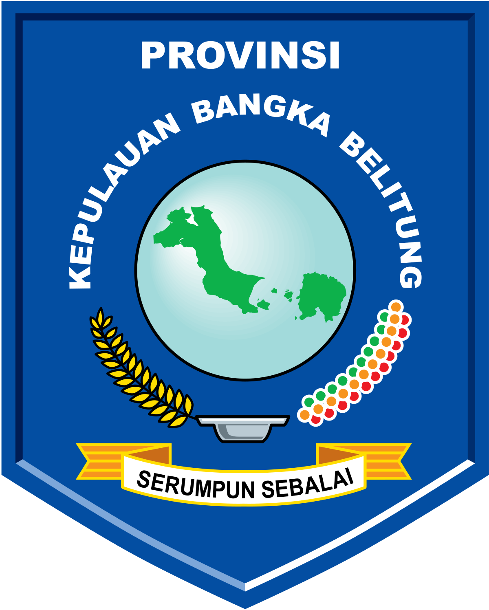

<!DOCTYPE html>
<html lang="en">

<head>
    <meta charset="UTF-8">
    <meta name="viewport" content="width=device-width, initial-scale=1.0">
    <title>Document</title>
</head>

<body>

</body>

</html><!DOCTYPE html>
<html lang="en">
<head>
    <meta charset="UTF-8">
    <meta name="viewport" content="width=device-width, initial-scale=1.0">
    <title>Pantai Parai Tenggiri</title>
    <link rel="stylesheet" href="styles.css">
</head>
<body>


</body>
</html>
<!DOCTYPE html>
<html lang="en">
<head>
    <meta charset="UTF-8">
    <meta name="viewport" content="width=device-width, initial-scale=1.0">
    <title>Kep. Bangka Belitung</title>
    <link rel="stylesheet" href="main.css">
    <link rel="stylesheet" href="https://maxcdn.bootstrapcdn.com/bootstrap/4.5.2/css/bootstrap.min.css" />
    <script src="https://maxcdn.bootstrapcdn.com/bootstrap/4.5.2/js/bootstrap.min.js"></script>
    <script src="https://code.jquery.com/jquery-3.5.1.slim.min.js"></script>
    <script src="https://cdn.jsdelivr.net/npm/@popperjs/core@2.5.4/dist/umd/popper.min.js"></script>
    <script src="https://stackpath.bootstrapcdn.com/bootstrap/4.5.2/js/bootstrap.min.js"></script>
</head>
<body>
    <header>
        <nav class="navbar navbar-expand-lg navbar-dark navi">
        <div class="container">
            
            <span id="judul">
                <h3 style="color: white;">Kep. Bangka Belitung</h3>
            </span>
            <button class="navbar-toggler" type="button" data-toggle="collapse" data-target="#navbarNav"
                aria-controls="navbarNav" aria-expanded="false" aria-label="Toggle navigation">
                <span class="navbar-toggler-icon"></span>
            </button>
            <div class="collapse navbar-collapse" id="navbarNav">
                <ul class="navbar-nav ml-auto">
                    <li class="item">
                        <a class="link" href="#" style="text-decoration: none;">Home</a>
                    </li>
                    <li class="item">
                        <a class="link" href="#" style="text-decoration: none;">Destination</a>
                    </li>
                    <li class="item">
                        <a class="link" href="#" style="text-decoration: none;">Culinary</a>
                    </li>
                    <li class="item">
                        <a class="link" href="#" style="text-decoration: none;">About Us</a>
                    </li>
                </ul>
            </div>
        </div>
    </nav>
    </header>
    <main id="content">
        <link rel="stylesheet" href="CSS DESTINATION.css">
        <div class="header">
            <h1>PANTAI LENGKUAS</h1>
        </div>
        
        <div class="container">
            <div class="gambar">
                
            </div>
            <div class="deskripsi">
                <h2>Tentang Pantai Lengkuas</h2>
                <p>
                    Pulau Lengkuas adalah salah sebuah pulau di Provinsi Kepulauan Bangka Belitung. Letaknya di sebelah utara Pantai Tanjung Kelayang, Kecamatan Sijuk, Kabupaten Belitung. Pulau ini merupakan satu dari ratusan pulau yang mengelilingi Pulau Belitung.
                    Daya tarik utama di pulau ini adalah sebuah mercusuar tua yang dibangun oleh pemerintah Kolonial Belanda pada tahun 1882. Hingga saat ini, mercusuar tersebut masih berfungsi sebagai penuntun lalu lintas kapal yang melewati atau keluar masuk Pulau Belitung.
                </p>
                
                 <div>   <p>Di Pulau Lengkuas terdapat batu granit, pasir putih dan air laut yang jernih. Pulau kecil yang bisa dikelilingi dalam waktu 20 menit ini, dapat didatangi dengan perahu sewaan dari Tanjung Binga maupun Tanjung Kelayang.</p>

                    <p>Pulau ini adalah tujuan untuk selam permukaan dan menyelam. Ada juga wreck indomarine. Penjaga mercusuar juga memelihara Penyu hijau.</p>

                    <p>Untuk menjaga kebersihan dan keberlanjutan lingkungan, pengunjung disarankan untuk membawa persediaan air minum dan membawa pulang kembali sampah yang dihasilkan selama di pulau, untuk dibuang di tempat sampah di daratan Pulau Belitung.</p>
                </div>

            </div>
        </div>
        
    </main>
        
    <script src="main.js"></script>
</body>
</html>